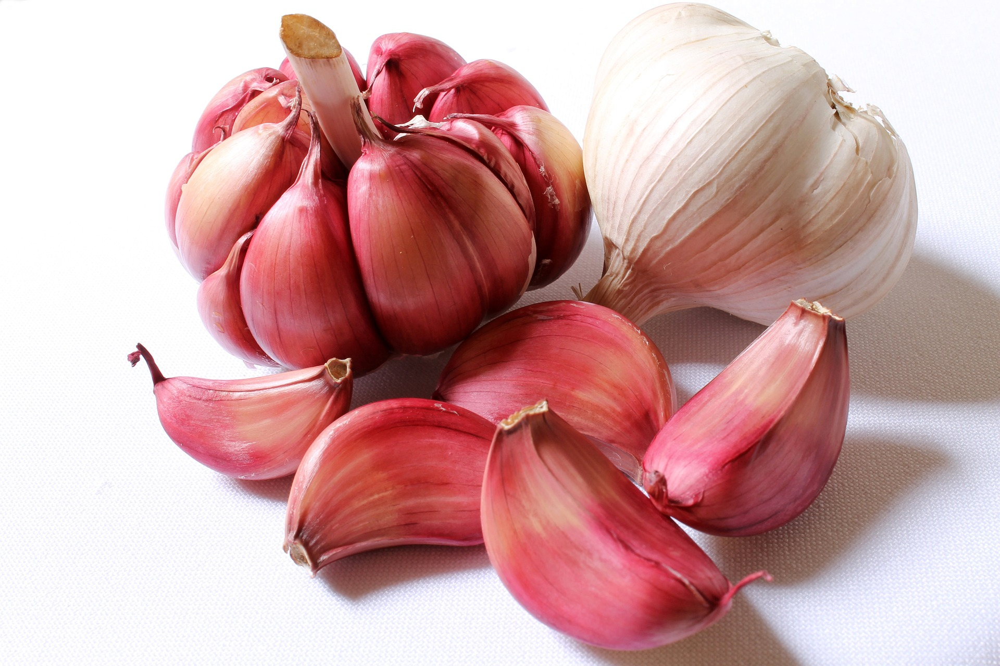
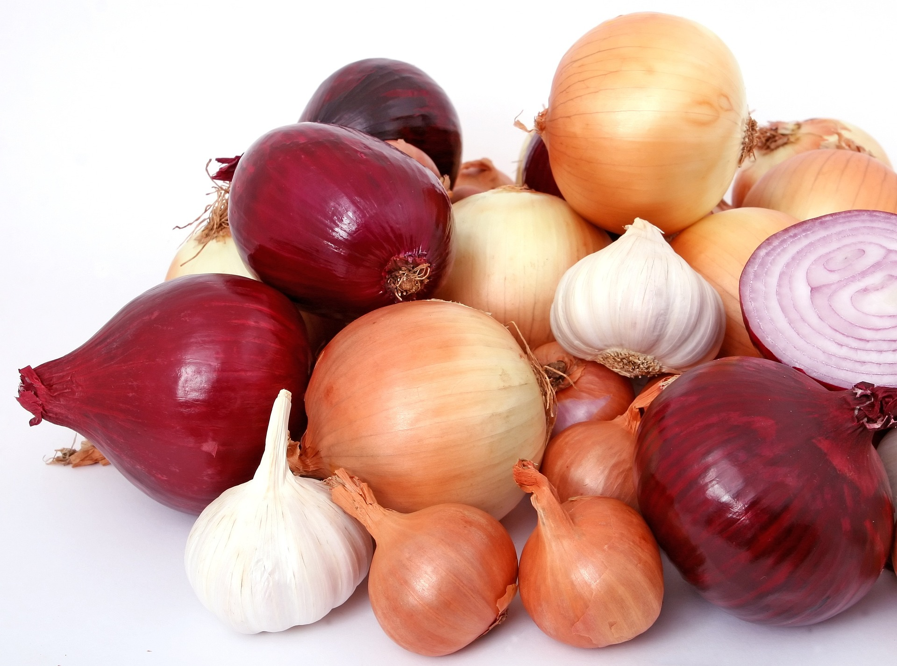
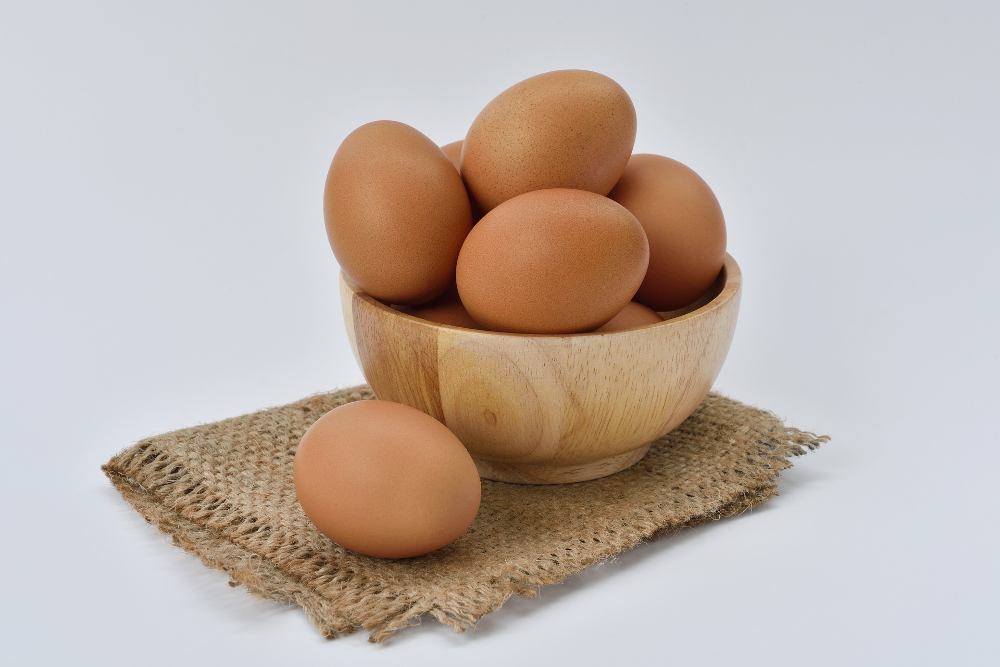
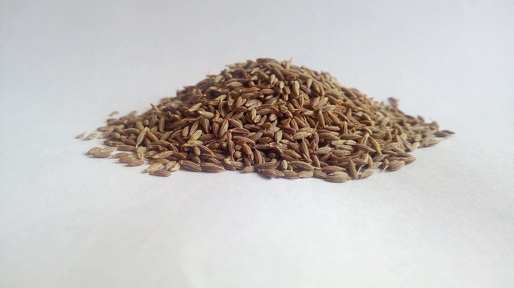
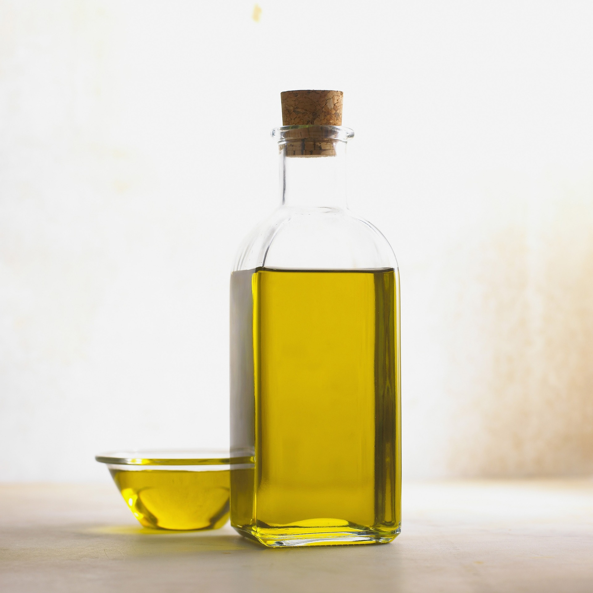
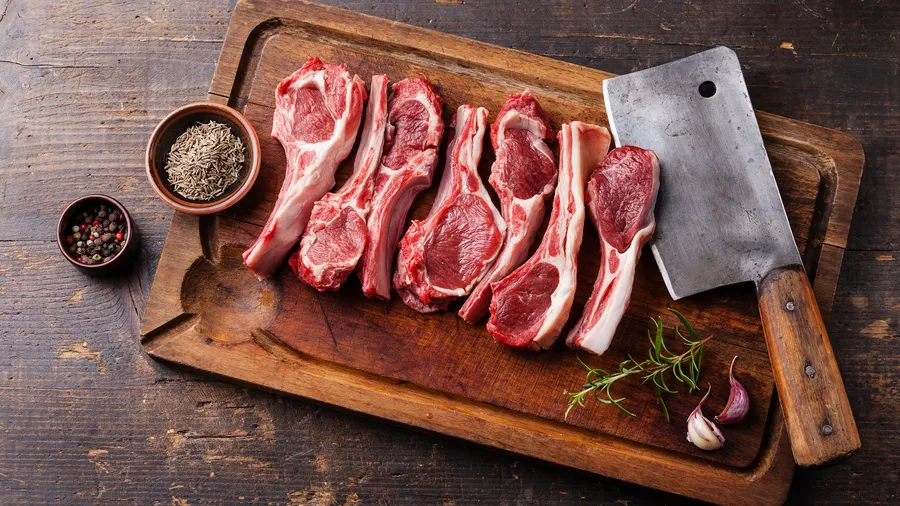
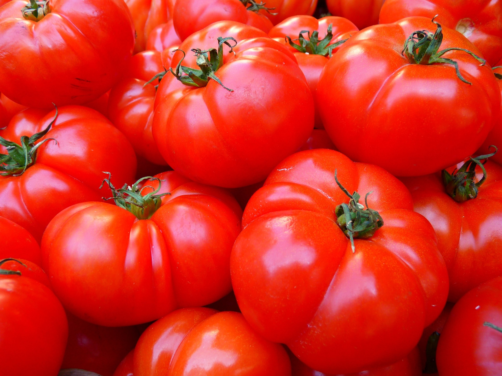
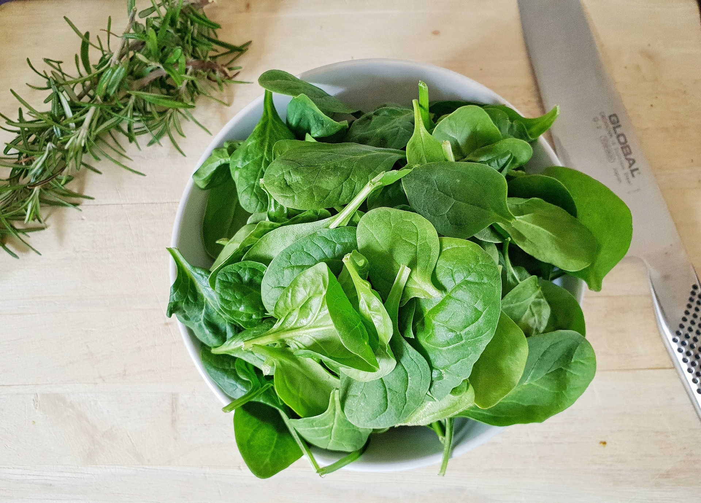
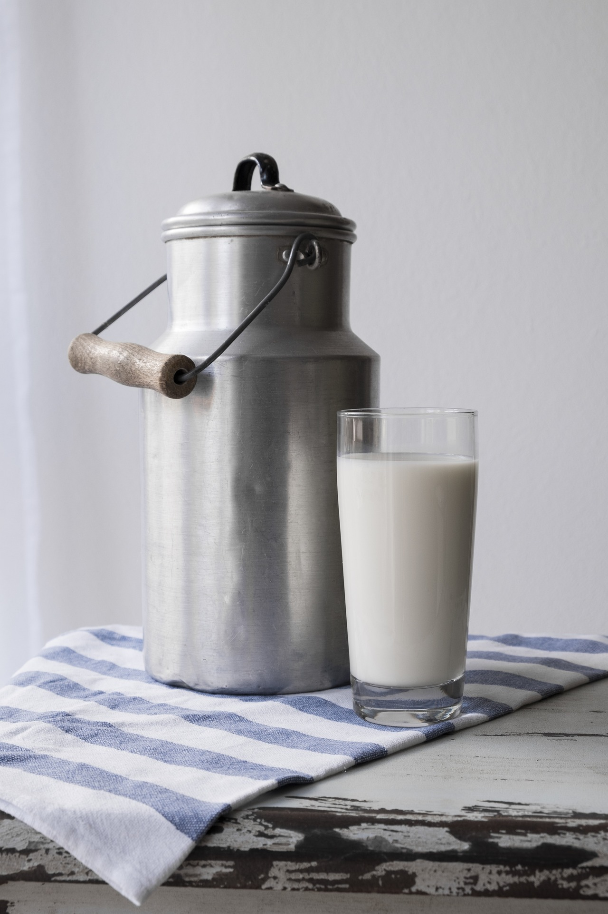

Here are some of our favorite ingredients that we cook with everyday :)

Garlic
Nature's aromatic ninja, adding flavor and warding off vampires with its pungent prowess.

Onion
The multitasking tearjerker, effortlessly enhancing dishes while making you weep in appreciation.

Eggs
The culinary chameleons, transforming from delicate omelettes to hearty scrambles, the ultimate breakfast heroes.

Cumin
The spice whisperer, sprinkling its warm, earthy essence into dishes, transporting taste buds to far-off lands.

Olive Oil
Liquid gold from Mediterranean shores, drizzling its smooth richness, elevating dishes to gourmet status.

Lamb
The regal meat, gracing tables with its tender succulence and commanding presence, fit for kings and queens.

Tomatoes
Juicy orbs of summer delight, bursting with tangy sweetness, lending their vibrant hue to salads and sauces alike.

Spinach
Popeye's secret weapon, these leafy green powerhouses pack a punch of nutrients, transforming ordinary meals into superfood feats.

Milk
Nature's white elixir, nurturing bones and fueling dreams with its creamy goodness, a staple in kitchens and bedtime stories.